Rendering an Interior Scene
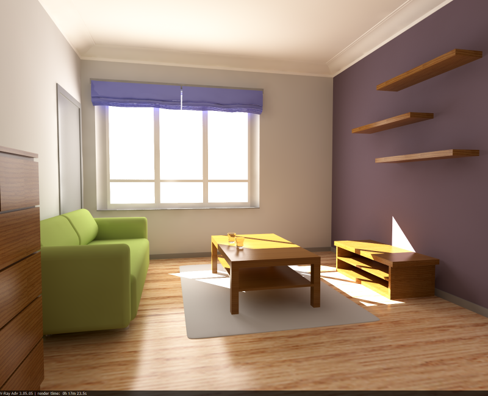
Note: The scene for this tutorial is provided by Wouter Wynen from Aversis ( http://www.aversis.be/ ).
Part I: Adjusting the GI settings
Step 1. First render
1.1. Open the scene (which can be found here ).
1.2. Assign V-Ray as the current renderer.
Since the default V-Ray settings are not very well suited for a fast initial preview, we'll make a few quick adjustments before the first render.
1.3. Check the Override mtl option in the Global switches rollout, click the button next to it, and select a default VRayMtl material.
1.4. Set the Image sampler type to Fixed.
1.5. Set the resolution to 400 x 325.
1.6. Set the Region size in the System rollout to 32 x 32 pixels.
1.7. Optionally, you can turn on the Frame stamp to print the render time on the image.
1.8. Render the scene:
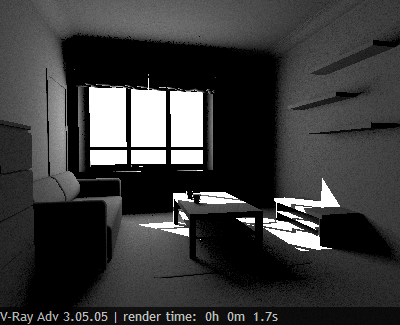
Step 2. GI preview
2.1. Turn GI on from the Indirect illumination rollout.
2.2. Select Light Cache as both the primary and secondary GI engine.
2.3. In the Light cache rollout, set the Subdivs to 500, since we want only a fast preview. We'll return this to 1000 for the final rendering.
2.4. Render:
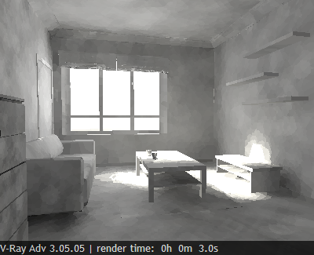
The result is quite noisy, but it does give a good idea of what the scene lighting is like.
Step 3: Tweaks
3.1. Since the scene looks too dark, we would like to brighten it a bit. There are several ways to do this. One is to increase the power of the lights. However, this will make the directly lit areas of the image, like the patch of sunlight, too bright, while indirectly lit regions will remain relatively dark. Here is an example of this (all lights are x 2):
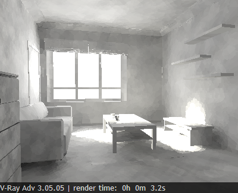
You can see that the increased light power has made the image brighter, and also has increased the contrast of the lighting. The scene still looks a little dark though. We can increase the light power even further, but this will blow out the directly lit areas too much, and will slow down the GI calculations later on. So, instead of increasing light power, we will simply make the material brighter.
3.2. Go to the Material Edtior and put the default VRayMtl in one of the slots (it shows up as being used in the "Environment" in the Material/Maps browser).
3.3. Make the diffuse color of the material RGB (200, 200, 200).
3.4. Render
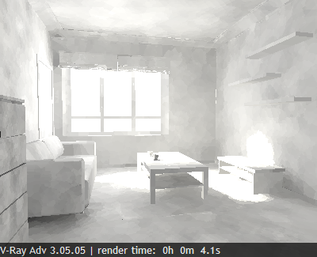
The result is much better. We still have the same amount of light entering the scene, but it is bounced around more and thus increases the overall brightness of the scene.
At this point, you can adjust the ratio, color etc of the lights, while getting a relatively fast feedback on the lighting.
Step 4. Better GI.
The GI settings that we used are good mostly for fast previews, while you are still adjusting the scene. Once you have settled on the parameters of the lights, it's time to refine the GI solution.
4.1. Set the primary GI engine to Irradiance Map.
4.2. Select a Medium preset for the irradiance map.
4.3. Render the scene.
Rendering takes more time now as V-Ray needs to calculate a more precise GI solution.
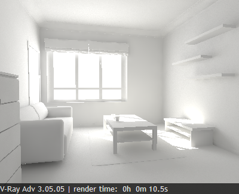
Step 5: Better antialiasing and less noise
The GI looks okay now, but we still have no antialiasing, and there is noise from the area light at the window. We'll deal with those now.
5.1. Set the Image sampler type to Adaptive.
5.2. Turn GI off.
5.3. Render
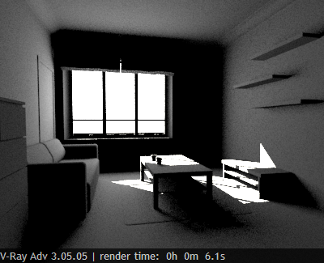
We do have antialiasing now, but the noise is even worse. We'll adjust the Global DMC sampler to improve that.
5.4. Set the Min. samples of the DMC sampler to 16 and t he Noise threshold to 0.002.
5.5. Render:
The noise is a little less, but there is still some of it. Reducing the Noise threshold and increasing the Min. samples any more will not help. We simply need more samples for the area light. One way to do that is to go to the parameters of the VRayLight and increase the subdivs. However, if you have a lot of lights in the scene, this is quite a lot of clicking. Instead, we will use the Global subdivs multiplier to do that.
5.6. Set the Global subdivs multiplier to 4.0 and render:
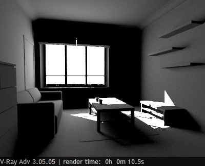
There is still some noise, but we can continue to increase the Global subdivs multiplier until the result is good enough; 16.0 seems to be a good value.
5.7. Set the Global subdivs multiplier to 16.0 and render:
Step 6. Final rendering with GI
The increased Global subdivs multiplier affects the irradiance map too, so if we render now with GI, it will be too slow. We'll need to do some adjustments.
6.1. Turn GI on.
6.2. Set the Hemispheric subdivs for the irradiance map to 8.0 to compensate for the increased Global subdivs multiplier.
6.3. Render
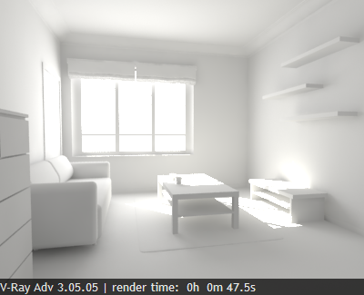
This completes the first part of the tutorial. In the next part, we'll add the scene materials.
Part II: Rendering with materials
Step 1. Rendering with materials
1.1. Turn the Override mtl option in the Global switches rollout off.
1.2. Turn on the reflection/refraction Override depth limit in the same rollout.
1.3. Turn GI off.
1.4. Set the Noise threshold of the Global DMC sampler to 0.005 for faster previews.
1.5. Render:
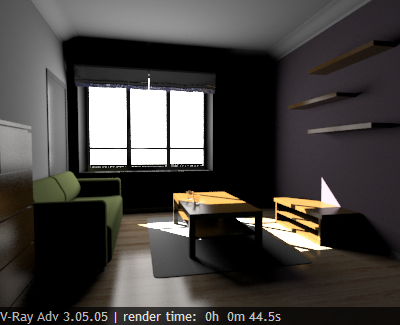
Step 2. Preview materials with GI on
2.1. Turn GI on.
2.2. For faster previews set the primary engine to Light Cache.
2.3. Render:
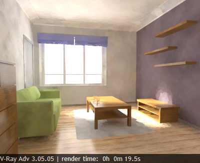
At this point you can adjust your scene materials while getting fast previews of how the will look in the scene.
Step 3. Better GI with the materials
3.1. Set the primary engine to Irradiance Map.
3.2. Set the Global DMC Noise threshold to 0.002.
3.3. Set the light cache Subdivs to 1000.
3.4. Set the light cache Sample size to 0.03 (this will make the light cache a little smoother and slightly faster).
3.4. Render:
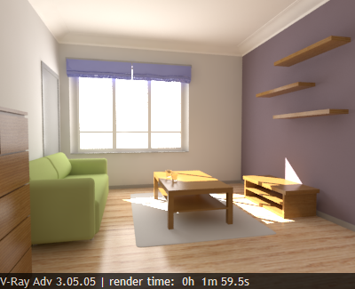
This is the final image that we will render at full resolution in the next part.
Part III: Rendering the final image
We now have to render the final image.
Step 1. Adjusting V-Ray for larger resolution
1.1. Set the resolution to 1600 x 1300.
1.2. Set the render region size to 64 x 64.
We will need to adjust the irradiance map parameters: since we increased the resolution twice, we can decrease the irradiance map Min and Max rate by 2.
1.3. Set the irradiance map preset to Custom.
1.4. Set irradiance map min rate to -5.
1.5. Set irradiance map max rate to -3.
Step 2. Rendering the final image.
2.1. Set the 3ds Max to save the rendered image. For increased precision, you can choose a 16-bit image format (for example, a 16-bit .png). Optionally, you can save to a .hdr image; in that case you need to select the Unclamped color channel in the V-Ray GBuffer rollout.
2.2. Press the Render button.
2.3. Go out for lunch.
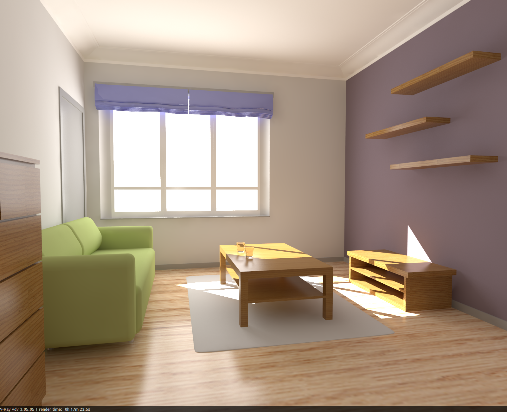
The final scene for this rendering can be found here.
Part IV: Post-Processing the Image
The image looks okay, but in most cases you will want it to be a little darker or a little brighter etc. Instead of changing the lights and re-rendering, you can do those adjustments in an image processing program or directly in the V-Ray VFB. For example, here I added a bit of contrast to the image from the V-Ray VFB color corrections: